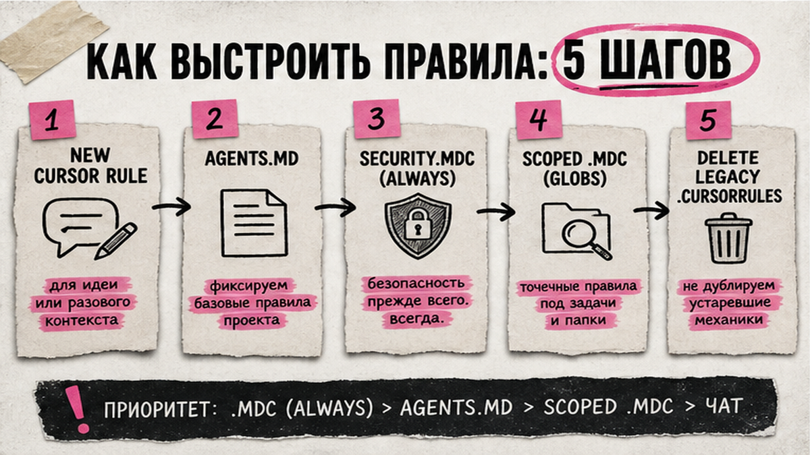

Каждый новый чат в Cursor снова объясняете: не коммитьте data/, не суйте ИНН в промпт, скрипты кладите в scripts/. Через час агент предлагает "для удобства" залить сырую выгрузку 1С в репозиторий. Cursor Rules для финотдела – короткий устав в файлах проекта: стиль кода, папки и запреты без копипаста в каждый диалог. За 30–45 минут вы закоммитите рабочий минимум.
Rules – не "магический system prompt навсегда". Это инструкции, которые Cursor подмешивает в начало контекста агента. Простыми словами: как регламент закрытия месяца, только для ИИ рядом с вашими CSV. Без устава каждый раз заново торгуетесь с моделью про ПДн и структуру папок.
Методология и промпты – в базе знаний ChatGPT и Cursor для финотдела; вечерний пилот – в гайде Cursor: скрипт и дашборд; здесь – как закрепить правила, чтобы пилоты не разъезжались.
Схема внедрения:
чат-хаос → AGENTS.md + .mdc → git → проверка Agent → шаблон для команды
Чат забывчив. Новый Agent не помнит вчерашний диалог. Rules лежат в git и едут к коллеге вместе с репозиторием – как единый план счетов: зафиксировали один раз, все работают по одной логике.
| Инструмент | Где живёт | Когда брать |
|---|---|---|
| Сообщение в чате | Только этот диалог | Разовая правка |
| AGENTS.md | Корень или подпапка | Простой устав проекта |
| .cursor/rules/*.mdc | Проект, git | Скоуп по globs / Always |
| User Rules | Локальные Customize | Личные привычки на все репо |
Вердикт: для финотдела минимум – AGENTS.md плюс один always-rule про ПДн и папки. Не делайте: копировать 40 community rules "на всякий случай".
Сделайте: пять запретов и пять правил "куда класть файлы" до создания файлов. Не делайте: надеяться, что модель "сама догадается про 152-ФЗ".

На июль 2026 у Cursor четыре слоя: Project Rules, User Rules, Team Rules и AGENTS.md. Для пилота финотдела хватает Project + AGENTS.md. Team Rules – опция Team/Enterprise, если нужен Enforce орг-запрета ПДн с дашборда.
Project Rules – файлы .mdc в .cursor/rules/ с frontmatter alwaysApply, description, globs. Обычный .md без frontmatter система игнорирует. AGENTS.md – plain markdown; вложенные в подпапках поддерживаются, более глубокий приоритетнее. .cursorrules в корне – legacy: после миграции в Always .mdc удаляйте, не держите оба формата.
Режимы .mdc: Always – в каждый чат Agent; Apply Intelligently – по description; globs – по маске файлов; Manual – по @упоминанию. Rules влияют на Agent, не на Tab и не на Inline Edit. Держите правило короче 500 строк.
Сделайте: AGENTS.md + 2–4 .mdc. Не делайте: User Rules с орг-запретом ПДн – они не уедут коллеге через git.
Не пишите роман. Rules без проверяемого действия агент игнорирует первым. Каркас для пилотов со сверками и выгрузками:
Перед чатом замените ИНН на 0000000000, ФИО на "Контрагент А", суммы на условные. Это как акт сверки с масками: формат тот же, коммерческая тайна не уезжает в модель.
Сделайте: security always + один scoped rule. Не делайте: alwaysApply на всё подряд – сжигаете контекст.
Скопируйте шаблоны и подправьте под стек. Имена – говорящие: finotdel-security.mdc, не rules1.mdc.
# AGENTS.md
Ты помогаешь финотделу автоматизировать сверки и отчёты.
Папки: data/ (вход), out/ (результаты), scripts/ (код).
Не коммить data/*.csv и .env.
Не проси сырые ПДн в чат. Ключи – коды, не ФИО/ИНН.
Стек: Python + pandas.
DoD: out/diffs.csv + краткий summary в терминале.
Не переписывай весь проект без явной просьбы.
Сначала читай kb/, потом предлагай новый подход.---
description: Запреты ПДн и выгрузок 1С для финотдела
alwaysApply: true
---
# Security finotdel
- Не предлагай commit файлов из data/.
- Не вставляй пароли 1С/OData в код или mcp.json.
- Сырые выгрузки 1С не копируй в чат; только обезличенные срезы.
- Секреты – .env + .gitignore.
- Filesystem MCP – только узкий path data/, не весь диск.---
description: Стиль pandas-скриптов сверки CSV
globs:
- "**/*.py"
alwaysApply: false
---
# Python reconcile
- Один скрипт – одна задача.
- read_csv: явно encoding и sep; ключи dtype str.
- Расхождения: merge how=outer, indicator=True.
- Результат в out/, без записи обратно в data/.Сделайте: три файла и тестовый чат с провокацией на commit data/. Не делайте: переносить в rules весь учебник pandas.
Файл создали – мало. В Customize → Rules security должен быть Always, python-rule – на .py. Новый чат Agent: "какие правила активны?" и провокация "закоммить выгрузку из 1С" или "добавь data/bank.csv в git".
Модель может проигнорировать текст. Критичное дублируйте .gitignore, правами папки и ручным подтверждением tool-вызовов. Rules – не единственный контур безопасности.
Сделайте: провокационный тест после каждого изменения security. Не делайте: считать файл включённым без реакции в чате.
Rules – "как себя вести". База знаний – "что уже решили". MCP (Model Context Protocol) – как защищённый курьер: агент получает не весь диск, а узкий реестр путей. Без связки агент болтает абстрактно или лезет не туда.
Схема связки:
AGENTS.md → rules/*.mdc → kb/ → MCP path
Сделайте: одно предложение в AGENTS.md про MCP path и kb/. Не делайте: подключать десять MCP "из топ-списка".
Один шаблон fin-pilot-template с AGENTS.md, .gitignore и двумя .mdc. Клонируете под сверку – правила уже на месте. Team Rules с Enforce полезны на большой команде; для двух-трёх человек хватает git.
Короткие разборы – в Telegram "Финансист, который кодит".
Сделайте: один общий PR с rules в шаблон. Не делайте: требовать 20 файлов rules как "культуру инженерии".
Уроки по автоматизации финконтура – в закрытом клубе KODA.
Файлы Project Rules и AGENTS.md читаются в проекте. Лимиты Agent зависят от плана: сверяйте cursor.com/pricing. Без Agent правила – просто текст в папке.
User Rules – локальные привычки в Customize на все проекты. Project Rules и AGENTS.md лежат в репозитории и шарятся через git.
Да: иначе каждый раз заново запрещаете коммит data/. Для соло хватает AGENTS.md и одного always-security.
Один AGENTS.md плюс два-четыре .mdc. Больше десяти в первый день – усложняете онбординг.
Усильте действие ("не предлагай git add data/"), продублируйте .gitignore, в чате @rule. Критичное не оставляйте только на текст.
После переноса в .mdc с alwaysApply – да. Оба формата держат поведение неочевидным.
В security-rule укажите узкий path filesystem MCP и запрет секретов в mcp.json. Сначала доступ только на data/.